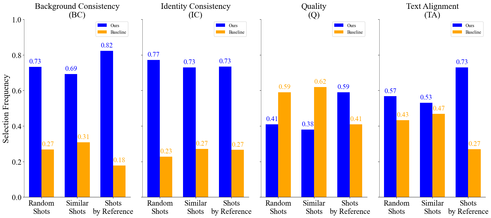
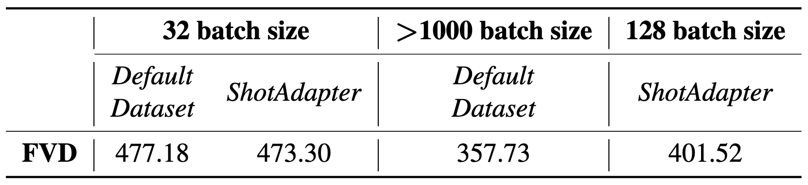

ShotAdapter: Text-to-Multi-Shot Video Generation with Diffusion Models
Supplementary Material
In this supplementary file, we provide the full videos of the results shown in the paper, as well as additional qualitative results. Please refer to the corresponding section linked below for more details.
Here we include the complete videos of the examples shown in Figure 1 (teaser) and Figure 5 (qualitative results) of the main paper. We also provide additional multi-shot video and text pairs grouped based on the number of shots being generated.
You can find examples where background consistency is maintained across shots (e.g. generated 4-shot video), as well as examples where the background changes (e.g. generated 3-shot video) between shots.
Generated 2-, 3-, and 4-Shot Video Results with ShotAdapter (each row displays 1 generated multi-shot video). Each shot is displayed separately in the columns following the first column.
Generated 2-shot Video
Shot-1 Prompt: "a young girl paints at an easel in her bedroom"
Shot-2 Prompt: "she then reads a comic book in her bed"
Generated 3-shot Video
Shot-1 Prompt: "a man sketches in a notebook at a quiet cafe, his hand moving quickly across the page"
Shot-2 Prompt: "he pauses, looking up thoughtfully before continuing his drawing"
Shot-3 Prompt: "later, the man steps outside, his notebook tucked under his arm as he takes in the city around him"
Generated 4-shot Video
Shot-1 Prompt: "scientist in lab coat examines a specimen"
Shot-2 Prompt: "she writes notes on a clipboard"
Shot-3 Prompt: "she adjusts dials on a machine"
Shot-4 Prompt: "she pours a liquid into a beaker"
2-Shot Video Results. Each video is generated using ShotAdapter.
Shot-1 Prompt: "a woman knits on the couch in a warm living room"
Shot-2 Prompt: "she then organizes clothes in a walk in closet"
Shot-1 Prompt: "a man plays the guitar in his music room"
Shot-2 Prompt: "he then records a song on his laptop, listening with headphones"
Shot-1 Prompt: "a man lifts weights in a home gym"
Shot-2 Prompt: "he then sits on a park bench, drinking water"
Shot-1 Prompt: "a man writes cide in a laptop in his home office"
Shot-2 Prompt: "he then sketches diagrams on a whiteboard"
3-Shot Video Results. Each video is generated using ShotAdapter.
Shot-1 Prompt: "a man lifts weights in a small home gym"
Shot-2 Prompt: "he takes a break to drink water"
Shot-3 Prompt: "he then does pushups, counting each one out loud"
Shot-1 Prompt: "a woman sits at a kitchen table, softly illuminated by morning light as she glances out the window"
Shot-2 Prompt: "she sips her coffee, her eyes drifting thoughtfully across the room"
Shot-3 Prompt: "the woman then begins to eat a simple meal, her movements slow and deliberate"
Shot-1 Prompt: "a woman sits at a sunny beachside cafe, sketching the coastline in a small notebook"
Shot-2 Prompt: "she switches to reading a novel, the ocean breeze gently turning the pages"
Shot-3 Prompt: "she pulls out her phone, snapping a few photos as the sky transitions to shades of pink and orange"
Shot-1 Prompt: "a young woman sits cross legged on a living room floor, sorting through a stack of photographs "
Shot-2 Prompt: "she picks one up, smiling softly as she runs her fingers over the image"
Shot-3 Prompt: "The woman then stands up and begins pinning the photos to a string of lights"
4-Shot Video Results. Each video is generated using ShotAdapter.
Shot-1 Prompt: "a chef in a white apron chops vegetables"
Shot-2 Prompt: "he stirs a pot on the stove"
Shot-3 Prompt: "he plates a dish carefully"
Shot-4 Prompt: "he tastes the sauce, nodding in approval"
Shot-1 Prompt: "a woman sews on a machine on a table"
Shot-2 Prompt: "she then writes notes at the table"
Shot-3 Prompt: "she then sketches a design on a notebook"
Shot-4 Prompt: "finally, she organizes clothes in a laundry room"
Shot-1 Prompt: "a medieval knight in full armor sits in a grand hall, sharpening a sword"
Shot-2 Prompt: "he stands, admiring an ancient tapestry depicting past battles"
Shot-3 Prompt: "he moves to a wooden table, adjusting a map with miniature figures representing armies"
Shot-4 Prompt: "finally, he kneels at a stone altar, offering a quiet prayer in the dim candlelight"
Shot-1 Prompt: "a woman sits at her dining table, working on a puzzle"
Shot-2 Prompt: "she then moves to the kitchen, brewing a cup of coffee"
Shot-3 Prompt: "she relaxes on the couch, scrolling through her phone"
Shot-4 Prompt: "finally, she stands by the window, watching the rain"
Comparisons to Baselines
Here we put the complete videos of the images shown in Figure 6. We perform comparison with
Continuous Generation
Random Shots
Similar Shots
Shots by Reference
Note that our model was fine-tuned only with 5K iterations (is equivalent to less than 1% of the pre-training iterations).
2-Shot
ShotAdapter (Ours)
Continuous Generation
Random Shots
Similar Shots
Shots by Reference
Shot-1 Prompt: "a young woman strolls through a bustling Tokyo street at night, neon signs reflecting off her glasses"
Shot-2 Prompt: "she stops at a small street food stall, enjoying a steaming bowl of ramen as the city buzzes around"
3-Shot
ShotAdapter (Ours)
Continuous Generation
Random Shots
Similar Shots
Shots by Reference
Shot-1 Prompt: "a young woman decorates a Christmas tree in her living room"
Shot-2 Prompt: "she wraps presents neatly, placing them underneath"
Shot-3 Prompt: "she then sits on the couch, sipping hot cocoa and admiring the twinkling lights"
4-Shot
ShotAdapter (Ours)
Continuous Generation
Random Shots
Similar Shots
Shots by Reference
Shot-1 Prompt: "a woman sits at her dining table, working on a puzzle"
Shot-2 Prompt: "she then brews a cup of coffee"
Shot-3 Prompt: "she relaxes on the couch, scrolling through her phone"
Shot-4 Prompt: "finally, she stands by the window, watching the rain"
User Study

To complement the quantitative metrics, we conduct a user study on the Prolific platform with 75 participants.
Each participant views two videos simultaneously, selected from a pool of 10 randomly chosen videos from the
generated results, with one video always generated by ShotAdapter. Participants are then asked to choose their
preferred video based on identity consistency (IC), background consistency (BC), text alignment (TA), and quality (Q).
Our approach achieves superior results in a 1-to-1 comparison with baselines in identity
and background consistency. In terms of text alignment, it achieves a slight improvement over SS and RS,
while outperforming SR by a substantial margin, confirming the trends observed in the quantitative metrics.
While our model shows slightly lower performance in Quality (Q),
this can be attributed to finetuning (see next section) with a 90% reduced batch size, emphasizing the lightweight nature of our approach
as it still brings competitive results despite a training with much reduced batch size. Despite this minor trade-off,
our method excels in all other metrics, demonstrating its robustness and effectiveness for multi-shot video generation.
Limitations
Quality
Although our model demonstrates slightly lower quality compared to the baselines, as described in the user study section,
we hypothesize that this is due to the significantly reduced batch size during fine-tuning. Specifically, we utilized
a batch size that is 90% smaller than the one used during pre-training. The table below illustrates how varying the batch
size impacts the quality of the generated videos, measured by Frechet Video Distance (FVD).
As shown in the table, when fine-tuning with a batch size of 32, whether on the raw dataset (Default Dataset) without our data
collection pipeline or on our processed dataset (ShotAdapter), the FVD scores remain comparable. Notably, our method
(ShotAdapter) achieves slightly better scores, suggesting that the reduced batch size during fine-tuning, rather
than our data processing approach, accounts for the measured differences in video quality metric.
Furthermore, our current checkpoint, fine-tuned with a batch size of 128, shows improved quality compared to the
32 batch size setups. However, it still performs slightly worse than the original checkpoint, which was
pre-trained with a significantly larger batch size (>1000).

Non-human examples
Our model is fine-tuned on a multi-shot dataset of human videos. As a result, it may not perform well on non-human examples.
However, it can still generate plausible results for non-human examples, as shown in the following examples.
Generated 3-shot Video (Non-human)
Shot-1 Prompt: "a dog sits by the front door, watching people pass"
Shot-2 Prompt: "it plays tug of war with a toy rope in the living room "
Shot-3 Prompt: "it then takes a nap on the soft rug"